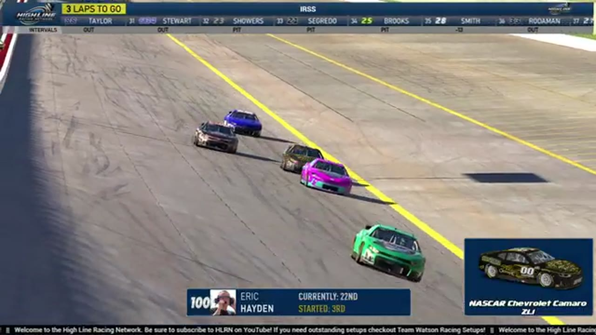

Eric Hayden
Team assignment not stated in the structured owner record.
A REVIEWED STORY FILE
- Official files
- 20
- Central editions
- 1
- Exact tape cues
- 9
- Accepted podiums
- 0
Eric Hayden appears in 20 official HLRN broadcast files across Seasons 1, 2. The current result ledger does not assign this driver a supported top-three finish. A consistently stated team affiliation remains open for owner review. The currently indexed source window runs from November 17, 2025 through July 20, 2026.
Highline Central supplies 1 bounded race edition, while the primary chapter index supplies 9 direct jump points. Talladega is the most frequent named track in the current appearance ledger. The densest direct-tape categories are incident (7 cues) and feature (1 cue). Those counts describe where the name is easiest to find; they are not fault, pace, or performance grades. A source-attributed car frame is published with its original video and timestamp. That is the current discovery map for Eric Hayden.
Official name signals are used for discovery only. They do not become starts, points, incident counts, or an ability grade. This page is deliberately detailed about the tape and restrained about the unavailable competition record. Separately, 17 Highline Live files sit on the bonus shelf and never enter the official season ledger. The displayed name is labeled transcript normalized; that status remains visible so an owner roster can strengthen or correct the identity without rewriting the evidence trail. Those boundaries define Eric Hayden's public HLRN file.
9 featured race-tape cues
These are discovery routes into complete HLRN broadcasts, not performance grades or inferred results.
- S2 / R4 · INCIDENT
Eric Hayden and Cory Cook surface in the EchoPark Speedway caution replay
S2 / R4 at 1:15:46: The caution sequence centers the replay call on Eric Hayden, Cory Cook, Chris James, and Donny Beach. This is a source-bounded incident window; it preserves what the booth reviews without assigning unsupported fault.
EchoPark Speedway - S2 / R3 · INCIDENT
Trace McDowell becomes the focus after multiple Chicagoland signals
The caution arrives with separate Eric Hayden and Benjamin Richards damage signals. Replay instead locates Trace McDowell's No. 9, so the card preserves the broadcast's uncertain search rather than merging all three drivers.
Chicagoland - S2 / R2 · INCIDENT
Wall contact brings out the Iowa yellow
S2 / R2 at 2:17:25: The caution sequence centers the replay call on Eric Hayden and Matt Brown. This is a source-bounded incident window; it preserves what the booth reviews without assigning unsupported fault.
Iowa - S1 / R15 · INCIDENT
Caleb Smith threads through the late superspeedway wreck replay
The booth switches to Caleb Smith's view as he slows through a wreck involving Aldo Nolle, Eric Hayden, Scott Wise, Brian Hayes, and other cars. The replay documents Smith's route through the traffic without assigning blame.
iRacing Superspeedway - S1 / R12 · INCIDENT
Jerry Fassett spins across the No. 28 in Daytona's late wreck
HLRN reviews Jerry Fassett moving down and spinning across the nose of the No. 28 as several cars are caught in the sequence. The card keeps the visible replay and avoids turning the booth's angle review into a fault ruling.
Daytona - S1 / R11 · INCIDENT
The Roval desk sorts multiple off-track calls under caution
HLRN checks an Eric Hayden shortcut and queues a Jacob Brown incident review while the field remains under caution. The broadcast then uses the delay for partner acknowledgments, so no single crash is claimed by this window.
Charlotte Roval - S1 / R5 · INCIDENT
Eric Hayden and Jim Sagredo surface in the Watkins Glen caution replay
S1 / R5 at 1:00:05: The caution sequence centers the replay call on Eric Hayden and Jim Sagredo. This is a source-bounded incident window; it preserves what the booth reviews without assigning unsupported fault.
Watkins Glen - S1 / R13 · FEATURE
Dover's team roll call sets the current race field
Before the grid, HLRN checks the AWR and Darkhorse lineups and notes the major names absent from Dover. The card is a current-race roster check, replacing an earlier embedded segment that was mislabeled as the opening green.
Dover - S1 / R13 · POSTRACE
Eric Hayden and Trevor Haley anchor the Dover post-race result review
S1 / R13 at 1:53:48: The reviewed live-race close has passed before this Dover result booth review begins with Eric Hayden, Trevor Haley, and Connor Papowell named in the discussion. It remains post-race context, not a new incident, stage, strategy call, finish, or result receipt.
Dover
Recent editions connected to Eric Hayden
Verified team history is not consistently stated. No position-specific top-three result is currently accepted. Name normalization remains reviewable against owner records.